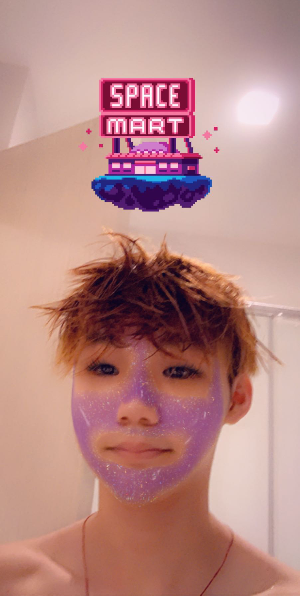

Personal Information

Here's an awakward photo of me
I am Malaysian Chinese and was born in Malaysia and lived here my entire life. I went to an international school from first grade until graduation (12 Years). English is the main language I speak, but I also understand, to a certain extent, Cantonese.
I took IB Computer Science for two years learning most of the basic elements, such as Java. I used to be part of the Softball team in High School and it was one of the sports I enjoyed playing the most, even though I’m not good at it. I also like gaming, some of the games I currently play are, CS:GO, Valorant, etc. My favourite game, however, is the Assassin’s Creed series.
Interest in IT

What is your interest in IT?
My interest in IT is mainly programming but I also find it interesting the way computers (or any electronic devices) are built and operated. I used to be in a club where we fixed broken computers by replacing components or installing a new OS when needed. However, I find programming more engaging and fascinating. I started gaining interest in IT during middle school when I took my first IT class, at the time it was just using blender to create objects and animations but it was still something that caught my eye. High school was when I started finding IT more exciting, because during 10th grade I took a class that taught us HTML coding, which was something new to me. The teacher was also a factor in making my experience more enjoyable, he was helpful and engaging which made the class more interesting. This class helped me decide to take IB Computer Science for 11th and 12th grade, which was taught by the same teacher. However, he left at the end of 11th grade, and his replacement quickly became a favourite teacher to us because he managed to make our time there more memorable. He was just more relatable to us and our conversations would always be interesting and funny.
Why did you choose to come to RMIT?
I chose to come to RMIT because of the location and campus. RMIT’s location makes it more efficient for me to travel and it's in the city, which makes it more accessible to me. I did hear from someone that RMIT was specialised, or was good, at technology. This helped me decide to come here. The reputation was also another factor that greatly helped in decision making for which university to go to. There isn’t really a main reason I chose to come here, just that the reputation and location was something I mainly looked for when deciding.
What do you expect to learn during your studies?
How to create applications/programs while implementing and using the knowledge I gained from my other classes, or experience, to aid me in the process. I also hope to learn how to work/collaborate more with others because this is one of my weaker traits that I want to improve on, including leadership skills.
Ideal Job
 Ubisoft Job Advertisment Link
Ubisoft Job Advertisment Link
A description of the position, and particularly what makes this position appealing to you.
A lead programmer should be experienced with coding in various languages, as well as leading a team. They should be able to communicate, work well with others, and lead them properly in order to achieve the desired goal of the project. This position is appealing to me because I want to be an experienced and successful programmer in the future. The leadership role is something I want to work towards achieving. Ubisoft is a potential place I would like to work at because they create video games, specifically the Assassin’s Creed franchise. Google would also be another place I would like to work at.
A description of the skills, qualifications and experience required for the position.
A lead programmer should have experience with various programming languages such as Java, Python, C++, etc. As well as good communication skills and the ability to get along well with others. Their organizational and time management skills should also be good because they are going to be the ones in charge of a team and getting objectives done on time. Specifically for the game industry, lead programmers should have experience with different gaming platforms such as, PC, PlayStation, Xbox, etc.
A description of the skills, qualifications and experience you currently have.
Currently I have experience coding with Java, Python, and HTML. I am most confident in Java, as I haven’t used Python and HTML in a while. I need to work on my communication and leadership skills because I don’t really have a lot of experience in that department currently, as well as my organizational and time management skill, which I’m slowly working on right now. I have experience with gaming on an Xbox, PlayStation, and PC.
A plan describing how you will obtain the skills, qualifications and experience required for the position, building on those you have now.
To obtain communication and leadership skills I will try to join clubs to work on both aspects. Gaining more experience with others in the group as well trying to take on a leadership role in the future.
For my time management and organizational skills I will try to create and stick to a plan as best as I can to ensure that I am able to achieve my tasks more efficiently. As for coding, practice would help a lot. Working on small projects or assignments will help me gain more experience. Especially for languages I am weaker in.
Personal Profile


 Myers Briggs Test Link
Myers Briggs Test Link
Big Five Personality Test Link
Learning Style Test Link
What do the results of these tests mean for you?
To a certain extent they mean something to me, it shows me that I am not a very extroverted person, which I already know, but it also tells me that there’s room for improvement in certain areas. These tests don’t define me accurately in my opinion, so the results don’t really mean much to me.
How do you think these results may influence your behaviour in a team?
I don’t think they’ll affect me that much, but it does make me question my communication skills and ability to work with others in a group due to my weakness in being an extrovert.
How should you take this into account when forming a team?
Have members with strengths in my weak points. This would allow everyone in the team to help each other, not just with the project, but with our own weaknesses. We’ll have less flaws as a group than by being with ourselves.
Project Idea

Overview
The project will be the development of an open world game with historical aspects, such as those found in Assassin’s Creed, with features to simulate possible outcomes for future events based on how the user plays the game and the choices they make. This would allow us to inform others of how decisions can have an impact on others or the environment surrounding them. I believe this is important because it would help people realize that their actions will have outcomes, either good or bad, and that they should try to think things through. The game would also help them realize that the more bad decisions they make the worse their experience is going to get.
Motivation
The game would be useful because it allows us to inform others that their decisions and actions have an impact on their surroundings in the future, no matter how small or big their choice was. The user would learn this through experience by playing the game, they will soon realize that they are going to have to think things through before making a choice in order to have a better outcome. Everyone knows the saying, “the only source of knowledge is experience” or some variation of it. This would help teach users of the consequences of their actions in a sandbox environment with no effects to them in the real world. They will still gain the experience without any harm.
Description
The product would be an open world rpg game, where the user is placed in the past at an historical event, such as during the French Revolution, their decision and choices would determine the outcome of certain events. The game would also allow the user to be placed in the current time (2020), to help them see the impact of their choices on the modern world. This would be done by using a simulation and prediction algorithm based on our real world events and facts, so the game’s predictions would be based off of real world circumstances that actually happened to gain a more accurate experience for the user or client. Although that might be a bit challenging because I do not think our technological advancements have progressed to the point of severity yet.
Tools and Technologies
A game engine would be used to help run the program, such as Unity, along with programming and graphical design to help further bring the idea into something usable for a client. The game engine would allow us to create the physics, render graphics, animations, etc. While the graphical designs would be created within a program such as Photoshop to give the game a more realistic environment for the user to explore in. Programmers would work on the algorithm that would the game to create simulations and predictions based on the user input. Taking information from the real world to help with the machine learning process.
Skills Required
The skills required for this project would be individuals that are proficient in the use of game engines, art design, and programming in various languages with knowledge in machine learning and prediction algorithms. No special hardware would be required, but if we are running multiple simulations at once, a cooler room would be ideal to prevent overheating of certain components within the computer. It should not be that difficult to find the individuals with the skills required, but a difficulty might be getting a programmer with sufficient knowledge in machine learning. All software and hardware requirements can be obtained easily.
Outcome
If successful, the project would allow the users to have an immersive experience in the past or present in a fictional world, with almost no limitations. It would also, hopefully, teach them that their actions and decisions will have an impact on their surroundings and overall experience. This should make them think more carefully before making a choice and perhaps even cause them to apply this knowledge onto their real world decisions as well, allowing them to make a more smarter or thought out decision.
Socials